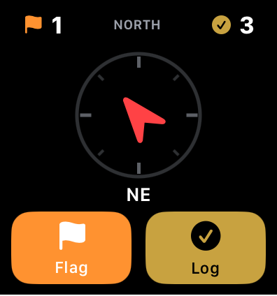

If you've spent any real time metal detecting, you know how quickly your hands fill up.
Detector in one hand, digger in the other, pouch at your side. Then you get a signal and want to mark it, log it, or come back to it later. That's usually the moment you reach for your phone, unlock it, tap around, and do something that should take a second but ends up pulling you out of the hunt entirely.
At first, it doesn't seem like a big deal. But over the course of a hunt, those interruptions start to add up.
The Interruption Problem
You stop more than you want to. You lose your rhythm. You skip logging things because it's inconvenient. You forget to flag signals you meant to revisit. And eventually, your phone starts to feel like something separate from detecting instead of something that actually supports it.
That's the tradeoff most people fall into. Either stay in the flow and ignore tracking, or track everything and constantly interrupt yourself to do it.
It's hard to have both.
Your Hunt on Your Wrist
What changes that is when interacting with your hunt no longer depends on pulling your phone out every time something happens.
With Aureal's Apple Watch integration, your hunt stays within reach without breaking your flow. Instead of navigating through your phone, you have a simple interface on your wrist with exactly what you need and nothing extra.

You can see your running counts for finds and flags at a glance, and when you need to act, you have large, easy-to-hit buttons for logging a find or flagging a signal. They're designed for real use in the field, when your hands aren't perfectly clean or steady, so you can make quick inputs and keep moving.
There's also a small navigation element built in that ends up being more useful than you'd expect. You can toggle the compass to either point north or guide you back to the starting point of your hunt, which helps keep you oriented without needing to check your phone or second-guess where you came from.
For Pro users, this becomes a lightweight control layer that sits alongside your hunt instead of interrupting it.
Your Phone, Without the Fuss
At the same time, your phone still plays a role, just in a way that doesn't get in your way.
On iPhone, Aureal includes a lock screen widget that gives you a live snapshot of your hunt without needing to open the app. You can see how long you've been out, how many finds you've logged, and how far you've traveled, all at a glance. It's the kind of information you'd normally have to stop and check, but instead it's just there when you happen to look down.
Better Records, Less Effort
Together, those pieces start to shift how the hunt feels.
You're no longer stopping to manage your app. You're not juggling tools and screens. Logging a find or marking a signal becomes something that happens naturally, right when it should, instead of something you put off until later.
And because it's easier, you end up doing it more consistently.
Over time, that leads to better records, more recovered targets, and a clearer picture of what actually happened during your hunt, all without sacrificing your focus while you're out there.
Because metal detecting works best when you're fully in it.
And once your tools stop pulling you out of that moment, everything starts to feel a lot more natural again.
Keep your focus in the field
Apple Watch support and lock screen widgets are built into Aureal. Log finds, flag signals, and track your hunt without reaching for your phone.
Download Aureal